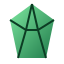

Política de privacidad
Aplicación: MOLDAVITA · Última actualización: 18 de noviembre de 2026
MOLDAVITA es una aplicación de notas que funciona en tu equipo. Esta política explica qué datos maneja y adónde van. En resumen: el desarrollador no recibe, no guarda y no vende ningún dato tuyo. No hay servidores propios, cuentas de usuario, publicidad ni analítica.
1. Tus notas se quedan en tu equipo
Las notas, ajustes, plantillas, historial y copias de seguridad se guardan como archivos en tu propio dispositivo, en la carpeta que elijas. MOLDAVITA no los envía a ningún servidor del desarrollador.
2. Google Drive (opcional)
Si decides conectar tu cuenta de Google para sincronizar la bóveda:
- Permiso que se pide: solo
https://www.googleapis.com/auth/drive.file. Con él, MOLDAVITA puede ver, crear, modificar y mover a la papelera únicamente los archivos y carpetas que ella misma creó en tu Drive (la carpeta «MOLDAVITA» y su contenido). No puede ver ni tocar ningún otro archivo de tu Drive. - Para qué se usa: exclusivamente para subir tus notas a tu Drive, descargarlas en otro equipo con la misma cuenta y mantener ambas copias sincronizadas. También se lee la dirección de correo de la cuenta conectada, solo para mostrarte en los ajustes con qué cuenta estás conectado.
- Dónde quedan los datos: los archivos van directamente de tu dispositivo a tu Google Drive, a través de las API de Google. No pasan por ningún servidor del desarrollador, que no tiene acceso a tu Drive ni a tus archivos.
- Credenciales: el permiso que da Google (token de acceso) se guarda solo en tu equipo y, cuando el sistema lo permite, cifrado con el almacén seguro del sistema operativo.
- Cómo quitar el acceso: en MOLDAVITA, Ajustes → Google Drive → Desconectar, que además revoca el permiso ante Google. También puedes quitarlo en cualquier momento desde myaccount.google.com/permissions. Los archivos ya subidos siguen en tu Drive hasta que tú los borres.
El uso que hace MOLDAVITA de la información recibida de las API de Google cumple la Política de datos de usuario de los servicios de API de Google, incluidos los requisitos de uso limitado. Los datos de Google no se usan para publicidad, no se venden, no se comparten con terceros y no se usan para entrenar modelos de inteligencia artificial.
3. Asistente de IA (opcional)
El asistente de IA está desactivado mientras no configures un proveedor (por ejemplo Anthropic, OpenAI, Google Gemini, OpenRouter, OpenCode u Ollama en tu propio equipo) con tu propia clave. Solo cuando tú le haces una consulta, la app envía directamente a ese proveedor tu mensaje y el contenido de las notas necesario para responderte. Ese envío lo inicias tú, va desde tu equipo al proveedor sin pasar por el desarrollador y se rige por la política de privacidad del proveedor que elegiste. Nada se envía a un proveedor de IA en segundo plano ni de forma automática. Las claves se guardan solo en tu equipo.
4. Otras conexiones
- Búsqueda web del asistente: si le pides al asistente que busque en internet, la consulta se envía al buscador correspondiente (por ejemplo DuckDuckGo, Bing o Wikipedia).
- Actualizaciones: la app puede consultar GitHub para saber si hay una versión nueva. No se envía ningún contenido de tus notas.
5. Lo que no hacemos
- No recopilamos datos personales ni estadísticas de uso.
- No usamos cookies, rastreadores ni publicidad.
- No vendemos ni compartimos datos con terceros.
6. Borrar tus datos
Como todo está en tu equipo y en tu Drive, tú tienes el control: borra la carpeta de la bóveda en tu dispositivo y la carpeta «MOLDAVITA» en tu Google Drive, y quita el permiso de la app como se explica arriba.
7. Cambios
Si esta política cambia, se publicará aquí con una fecha nueva.
8. Contacto
Para cualquier consulta sobre privacidad: github.com/jcacdc.